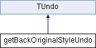

Inheritance diagram for getBackOriginalStyleUndo:

Public Member Functions | |
| getBackOriginalStyleUndo (const TStyleSelection &selection) | |
| void | getStyles (std::vector< TColorStyle * > &styles, const TStyleSelection &selection) const |
| int | getSize () const override |
| void | onAdd () override |
| void | getColors (std::vector< TPixel32 > &colors, std::vector< bool > &flags) const |
| void | setColors (const std::vector< TPixel32 > &colors, const std::vector< bool > &flags) const |
| void | undo () const override |
| void | redo () const override |
| QString | getHistoryString () override |
| int | getHistoryType () override |
| virtual int | getSize () const =0 |
| virtual void | undo () const =0 |
| virtual void | redo () const =0 |
| virtual void | onAdd () |
| virtual QString | getHistoryString () |
| virtual int | getHistoryType () |
Additional Inherited Members | |
 Public Attributes inherited from TUndo Public Attributes inherited from TUndo | |
| bool | m_isLastInBlock |
| bool | m_isLastInRedoBlock |
Detailed Description
Constructor & Destructor Documentation
◆ getBackOriginalStyleUndo()
|
inline |
1687 : m_selection(selection) {
1688 getColors(m_oldColors, m_oldEditedFlags);
1689 }
◆ ~getBackOriginalStyleUndo()
|
inline |
1691{}
Member Function Documentation
◆ getColors()
|
inline |
1717 {
1718 std::vector<TColorStyle *> styles;
1719 getStyles(styles, m_selection);
1720 colors.resize(styles.size());
1721 flags.resize(styles.size());
1722 for (int i = 0; i < (int)styles.size(); i++) {
1723 colors[i] = styles[i]->getMainColor();
1724 flags[i] = styles[i]->getIsEditedFlag();
1725 }
1726 }
◆ getHistoryString()
|
inlineoverridevirtual |
Reimplemented from TUndo.
1748 {
1749 return QObject::tr("Get Color from Studio Palette");
1750 }
◆ getHistoryType()
|
inlineoverridevirtual |
Reimplemented from TUndo.
1751{ return HistoryType::Palette; }
◆ getSize()
|
inlineoverridevirtual |
Implements TUndo.
1709 {
1710 return sizeof *this +
1711 (m_oldColors.size() + m_newColors.size()) * sizeof(TPixel32);
1712 }
◆ getStyles()
|
inline |
1694 {
1695 styles.clear();
1696 int pageIndex = selection.getPageIndex();
1697 TPaletteP palette = selection.getPalette();
1698 TPalette::Page *page = palette->getPage(pageIndex);
1699 if (!page) return;
1700 std::set<int> indices = selection.getIndicesInPage();
1701 // non si puo' modificare il BG
1702 if (pageIndex == 0) indices.erase(0);
1703 styles.reserve(indices.size());
1704 for (std::set<int>::iterator it = indices.begin(); it != indices.end();
1705 ++it)
1706 styles.push_back(page->getStyle(*it));
1707 }
TColorStyle * getStyle(int indexInPage) const
found.
Definition: tpalette.cpp:122
◆ onAdd()
|
inlineoverridevirtual |
Reimplemented from TUndo.
1714{ getColors(m_newColors, m_newEditedFlags); }
◆ redo()
|
inlineoverridevirtual |
Implements TUndo.
1746{ setColors(m_newColors, m_newEditedFlags); }
◆ setColors()
|
inline |
1729 {
1730 std::vector<TColorStyle *> styles;
1731 getStyles(styles, m_selection);
1732 int n = std::min(styles.size(), colors.size());
1733 for (int i = 0; i < n; i++) {
1734 QString gname = QString::fromStdWString(styles[i]->getGlobalName());
1735 if (!gname.isEmpty() && gname[0] != L'-') continue;
1736 styles[i]->setMainColor(colors[i]);
1737 styles[i]->setIsEditedFlag(flags[i]);
1738 styles[i]->invalidateIcon();
1739 }
1740
1741 m_selection.getPaletteHandle()->notifyColorStyleChanged(false, false);
1742 }
◆ undo()
|
inlineoverridevirtual |
Implements TUndo.
1744{ setColors(m_oldColors, m_oldEditedFlags); }
The documentation for this class was generated from the following file:
- E:/opentoonz/toonz/sources/toonzqt/styleselection.cpp